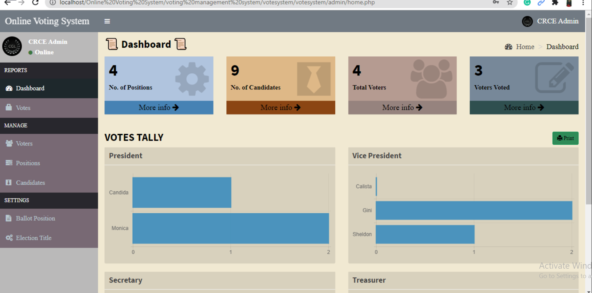
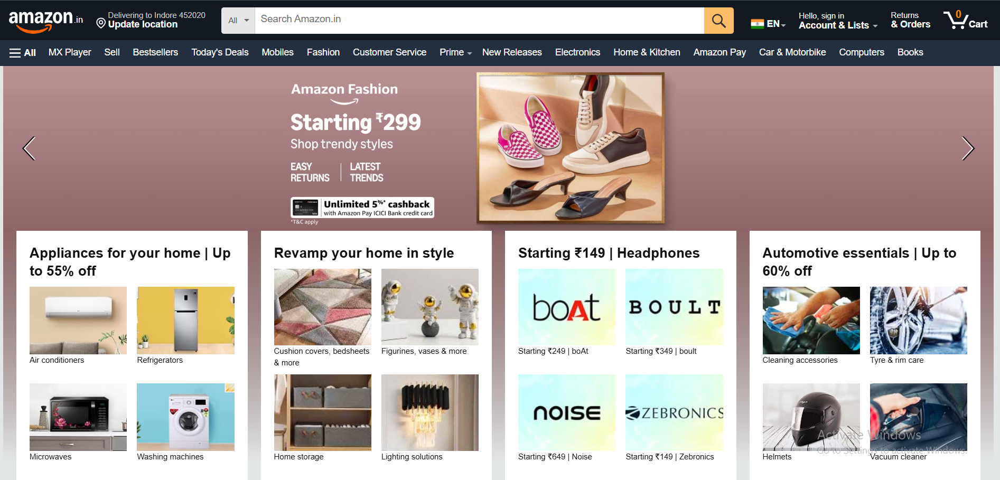

About Me
Introduction
My name is Deepak Kumar Mishra, and I am a passionate and dedicated aspiring Web developer with a strong foundation in full-stack development, data structures, and algorithm design. I believe in continuous learning, problem-solving, and building real-world applications that make a difference.
Professional Summary
I am a detail-oriented and enthusiastic individual currently focused on growing as a Full-Stack Java Developer. I have hands-on experience with technologies such as Java (Spring Boot), MySQL, React.js, Node.js, and RESTful APIs. I thrive in collaborative environments and enjoy taking on challenging projects that push me to learn and improve.
Education
I am currently pursuing my MCA from Chandigarh University, where I have gained a solid understanding of software development principles, algorithms, and system design.
Skills
- Languages: Java, JavaScript, Python, SQL, HTML, CSS
- Frameworks & Tools: Spring Boot, React.js, Node.js, Express.js, Hibernate ORM
- Databases: MySQL, MongoDB
- Version Control: Git, GitHub
- Tools & IDEs: VS Code, Eclipse, NetBeans, Postman
- Others: REST APIs, JWT Authentication, Agile Methodologies, CI/CD Basics
Work Experience
Internship at Codsoft (Since 10 May):
Currently working as a Web Developer Intern at Codsoft. I am involved in developing and improving responsive
web applications,
writing clean and efficient code using HTML, CSS, JavaScript, and working on real-world client projects to
enhance
experience and performance.
Project Experience:
-

Online Voting System:
Developed a secure voting platform where users can register, log in, and cast their vote only once. Built using Node.js, MySQL, and HTML/CSS. Ensured session control and real-time vote status display. -

Amazon clone:
An Amazon clone is a simplified version of the Amazon website. It lets users browse products, add to cart, and place orders. It uses HTML, CSS, and JavaScript for the user interface. -
 Microsoft Clone:
Microsoft Clone:
Created a responsive clone of the Microsoft homepage using HTML, CSS, and JavaScript. Focused on accurate layout design, mobile responsiveness, and UI polishing.
Hobbies
In my free time, I enjoy coding practice on platforms like LeetCode and HackerRank, exploring new web development trends, designing UI/UX in Figma, and reading technology blogs. I also enjoy playing chess and listening to music.
Goals and Ambitions
My short-term goal is to secure a position as a Full-Stack Developer in a reputed IT company where I can contribute to impactful projects. In the long run, I aim to become a senior software engineer and specialize in AI-integrated systems and scalable application architecture. I also aspire to mentor upcoming developers and contribute to open-source projects.